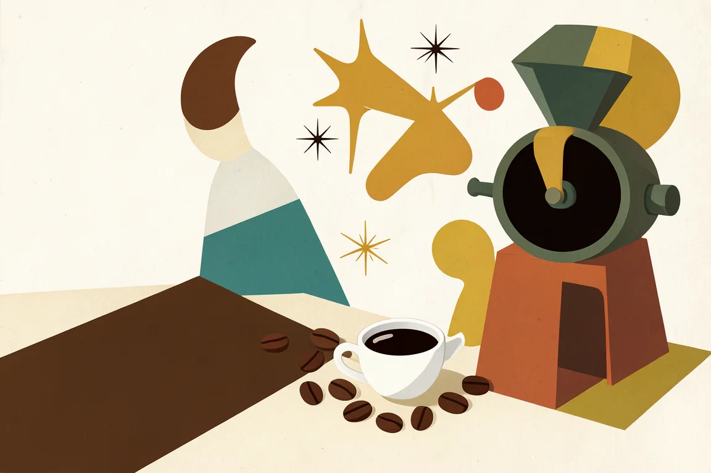

grafiske retninger · 1945–1969 · også: MCM, Atomalderens design, Grafisk design fra midten av århundret
Organiske og geometriske former i sennep, blågrønt, oransje og valnøtt, med plate- og geometrisk skrift og brede marger. Stilen vokste ut av Bauhaus i etterkrigstidens Amerika og Skandinavia, og tilførte den modernistiske orden varme og lek.

Kjerneidé
Modernistisk form kan være varm og human når abstrakte former, naturlige materialer og en liten jordpalett tjener hverdagslivet.
Designprinsipper
Tegn former fra bare to familier: organiske former som bumerang, nyre og atom, og ren geometri som sirkler og rektangler.
Begrens paletten til 4 eller 5 farger: sennep, blågrønt, brent oransje, oliven og valnøtt på varm off-white.
Sett overskrifter i en geometrisk skrift eller plateskrift og brødtekst i en humanistisk eller grotesk sans serif.
La marger være minst 10 % av sidebredden, og plasser én illustrasjon som fokuspunkt.
Bruk asymmetrisk balanse på et rutenett med 6 spalter, og vipp sekundære former 10 til 20 grader.
Flat ut illustrasjonen til 2 til 4 fargelag med lett feilregistrering på 2px til 4px.
Knytt hvert ornament til en funksjon: en etikett, en skillelinje eller en peker.
Antimønstre
Neon eller rene mettede primærfarger i stedet for dempede jordtoner
Tett viktoriansk ornamentikk og skriftstil
Blanke gradienter, skråkanter og fotorealistiske tretekstur
Harde svarte konturer på 4px eller mer rundt hver form
Sentrerte, symmetriske layouter med like marger på alle sider